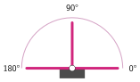
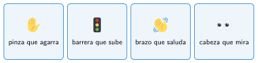

Programar los servos
🤔 Pienso5 min
Qué hago aquí: Piensa un momento y contesta con lo que ya sabes. No pasa nada si no lo sabes: es para empezar.
Una barrera de aparcamiento sube y baja. ¿Podrías hacerla con un motor que gira sin parar? ¿Qué problema tendrías?
📖 Leo y aprendo10 min
Qué hago aquí: Lee despacio, mira los dibujos y los ejemplos, y quédate con la idea clave del final.
Un motor gira sin parar. Para llevar algo a una posición exacta se usa un servo.


✏️ Hago30 min
Qué hago aquí: Haz las actividades en orden. Empieza siempre por las básicas.
Une cada actuador con lo que hace.
| Motor • | • Va a un ángulo y se queda |
| Servo • | • Gira sin parar |
Dibuja el brazo del servo a 0 grados y a 180 grados.
✏️ Puedes responder escribiendo, con un dibujo o un esquema, o contándolo en voz alta.
Conecta un servo en S1. Programa A para ir a 0 grados y B para ir a 180. ¿Funciona?
Programa una barrera: al pulsar A, sube a 90 grados, espera 3 segundos y baja a 0.
🚀 Amplío (si quieres saber más)
Qué hago aquí: ¿Has terminado? Lee la curiosidad o elige el reto. Es voluntario.
Haz que el servo vaya de 0 a 180 grados poco a poco, de 10 en 10, con una variable y un bucle.
✅ Compruebo5 min
Qué hago aquí: Contesta sin mirar la ficha y marca cómo lo llevas.